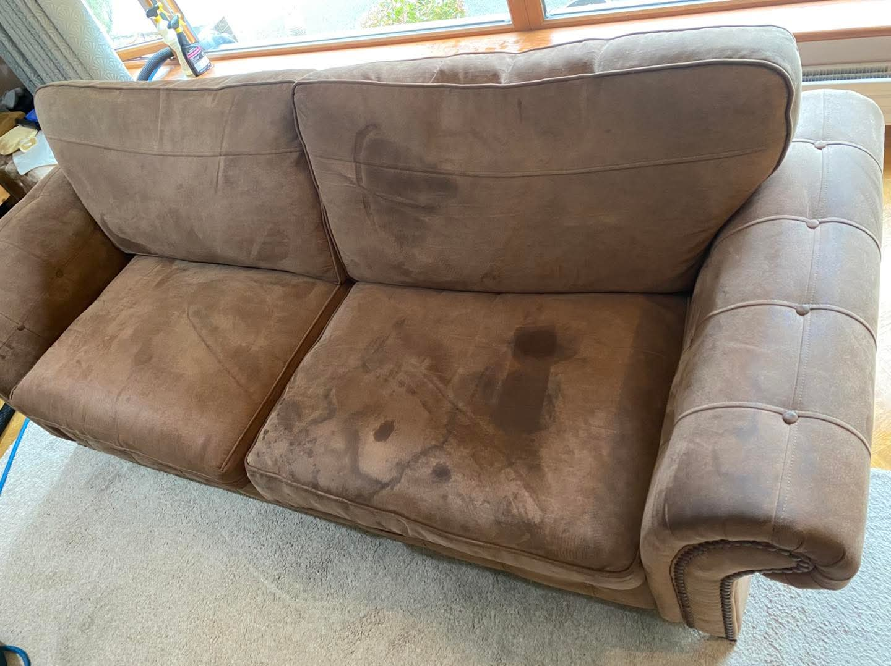
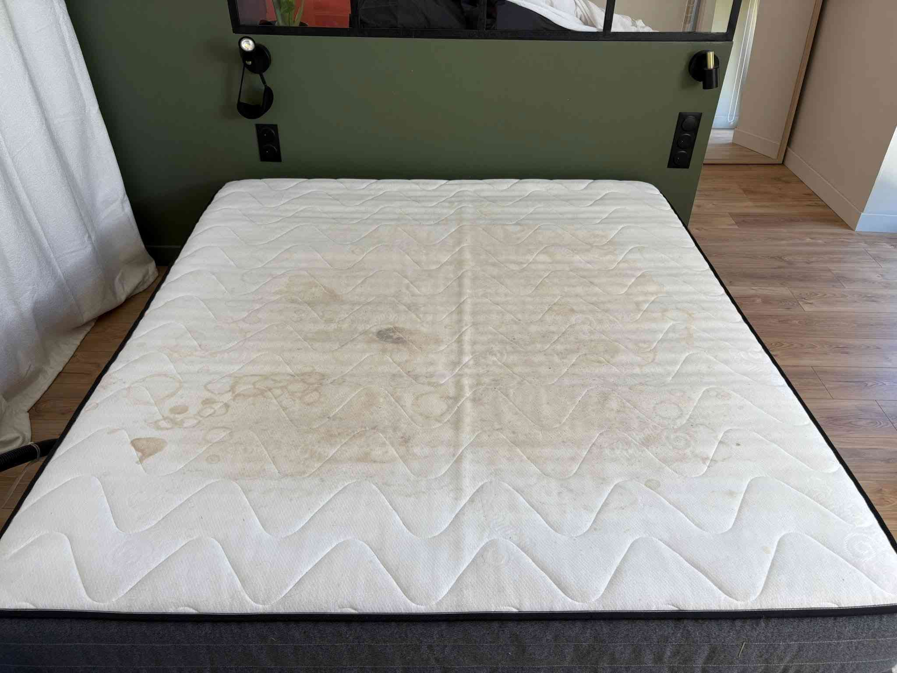
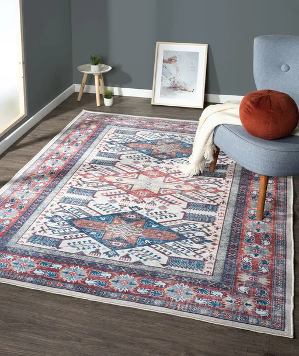
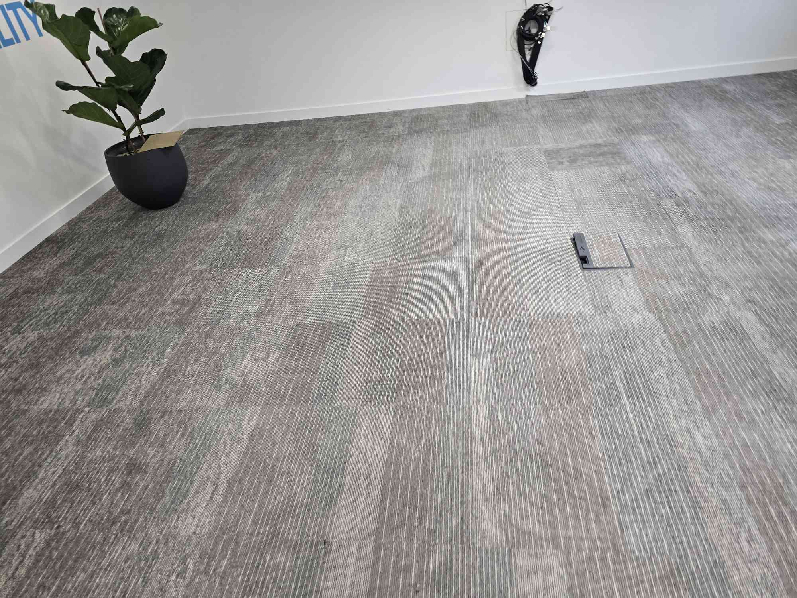

Tehnologie profesională Alltec • Curățare în profunzime reală
Prețuri transparente • Programări rapide în 24h




Folosim echipamente industriale Alltec, nu aparate comerciale standard.
Soluții profesionale adaptate fiecărui tip de material.
Extracție puternică pentru rezultate vizibile și timp redus de uscare.
2 locuri – 200 RON
3 locuri – 250 RON
4 locuri – 300 RON
Single – 100 RON
Dublă – 150 RON
King – 200 RON
15 RON / mp
*Deplasare gratuită pentru comenzi peste 200 RON
📞 Programează acumCompletează 30 secunde și îți răspundem rapid (apel / WhatsApp).